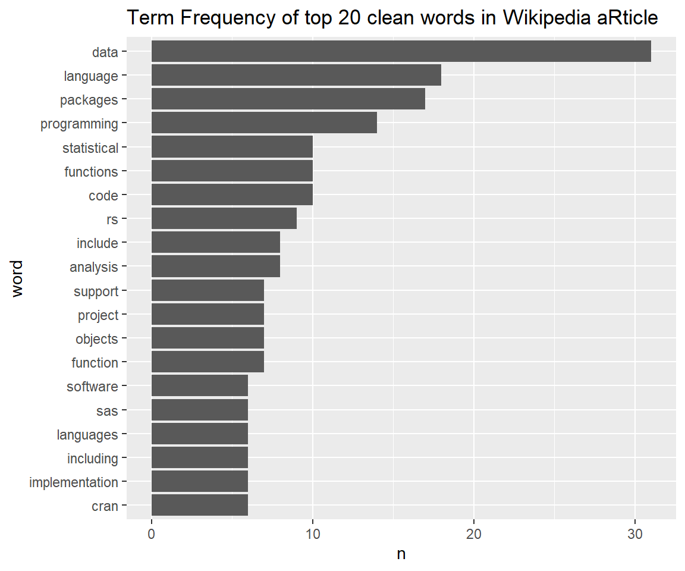
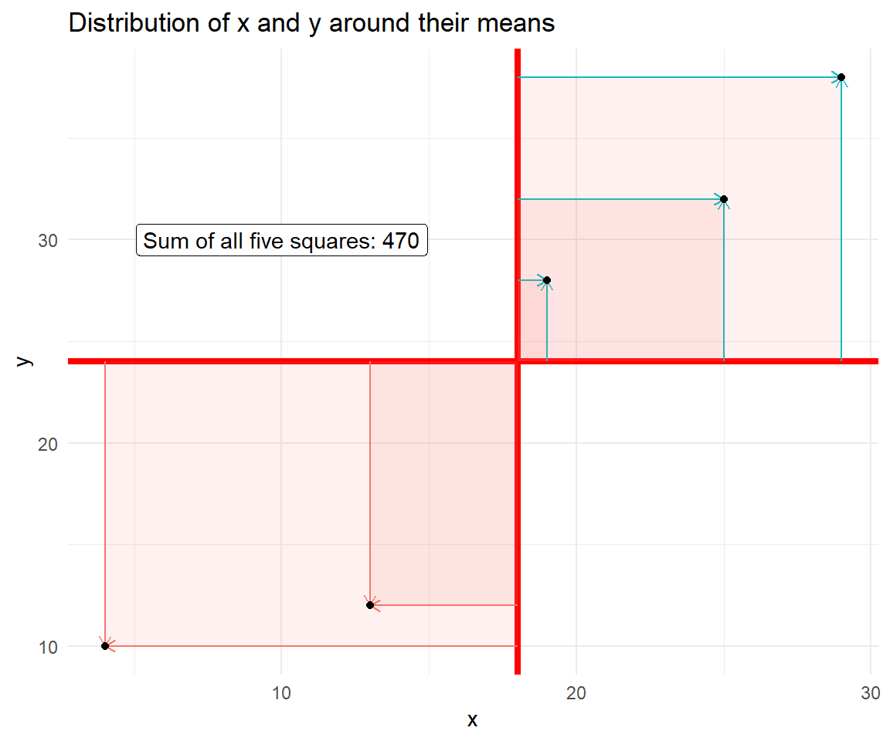
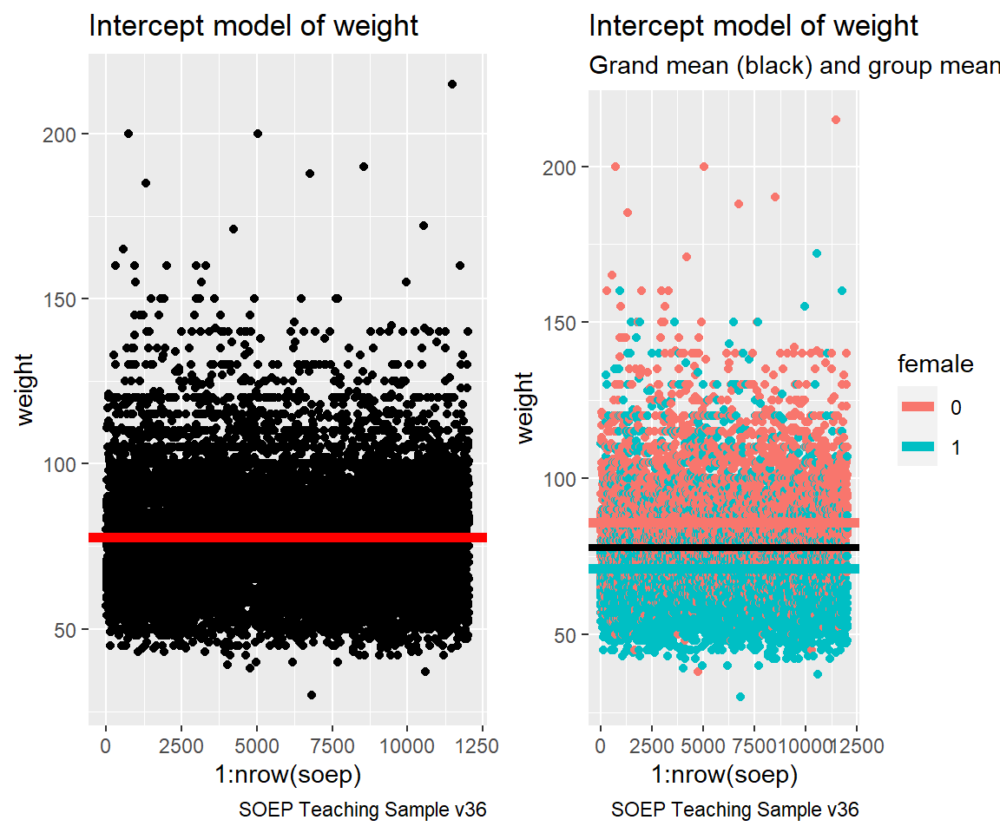
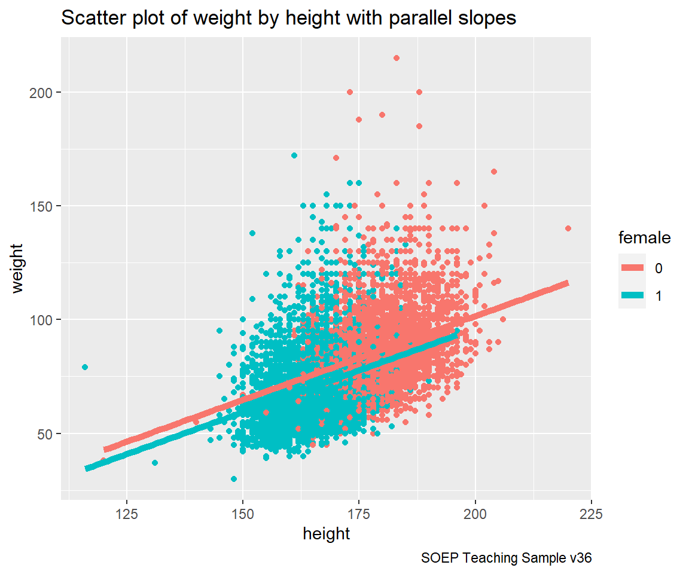

Chapter 8 Linear Regression
Please create a R markdown script and name it R08_name.Rmd replacing name by your name. Follow the structure of this document.
- Start each section with the appropriate heading by using a hashtag as first symbol.
- The final
R08_name.htmldocument is supposed to show code and its result. - Hide warnings and messages. Make it clean and concise.
When you are done, knit your document in order to create a HTML file. Name it R08_name.html replacing name by your name. Upload R08_name.Rmd and R08_name.html.
8.1 Data Inspection
Load soep.dta file from our learning management platform.
library(haven)
master <- read_dta("data/master.dta")Inspect the data with glimpse() in the console. Are there any missing? Ask table(is.na(master)).
library(tidyverse)
glimpse(master)
#> Rows: 336,646
#> Columns: 8
#> $ pid <dbl> 100001, 100001, 100001, 100001, 100001, 100001, 100001, 100…
#> $ syear <dbl> 1984, 1985, 1986, 1987, 1988, 1989, 1990, 1991, 1992, 1993,…
#> $ pla0009_v2 <dbl+lbl> 1, 1, 1, 1, 1, 1, 1, 1, 1, 1, 1, 1, 1, 1, 1, 1, 1, 1, 1…
#> $ ple0010_h <dbl+lbl> 1936, 1936, 1936, 1936, 1936, 1936, 1936, 1936, 1936, 1…
#> $ height <dbl> -8, -8, -8, -8, -8, -8, -8, -8, -8, -8, -8, -8, -8, -8, -8,…
#> $ weight <dbl> -8, -8, -8, -8, -8, -8, -8, -8, -8, -8, -8, -8, -8, -8, -8,…
#> $ l11101 <dbl+lbl> 4, 4, 4, 4, 4, 4, 4, 4, 4, 4, 4, 4, 4, 4, 4, 4, 4, 4, 4…
#> $ l11102 <dbl+lbl> 1, 1, 1, 1, 1, 1, 1, 1, 1, 1, 1, 1, 1, 1, 1, 1, 1, 1, 1…8.2 Data Manipulation (2 pt)
Please do the following:
- Filter for positive values in
heightandweight. - Filter for the
yearequal to 2016. - Create a variable
femalewhich is 1 for females and 0 for males (i.e. dummy variable). - Create a variable
ageas a difference of current survey year and birth year. - Rename the state and region variable (use
stateandregioninstead of SOEP code).
Hint: Check https://paneldata.org/ for the meaning of pla0009_v2, ple0010_h, l11101 and l11102.
Only keep the 8 variables you see in via the glimpse() function. Your soep sample should exactly look like this:
library(tidyverse)
soep <- master %>%
filter(height > 0, weight > 0) %>%
filter(syear == 2016) %>%
mutate(female = as_factor(ifelse(pla0009_v2 == 1, 0, 1))) %>%
mutate(age = 2016 - ple0010_h) %>%
rename(state = l11101,
region = l11102) %>%
select(!c("ple0010_h", "pla0009_v2"))glimpse(soep)
#> Rows: 12,039
#> Columns: 8
#> $ pid <dbl> 1000203, 1000902, 1003602, 1003702, 1003705, 1003706, 1004202, …
#> $ syear <dbl> 2016, 2016, 2016, 2016, 2016, 2016, 2016, 2016, 2016, 2016, 201…
#> $ height <dbl> 176, 167, 172, 163, 169, 180, 175, 194, 185, 167, 166, 170, 170…
#> $ weight <dbl> 80, 57, 78, 68, 80, 65, 64, 95, 84, 54, 68, 75, 60, 83, 66, 67,…
#> $ state <dbl+lbl> 3, 1, 3, 5, 5, 5, 8, 8, 5, 5, 8, 9, 9, 9, 3,…
#> $ region <dbl+lbl> 1, 1, 1, 1, 1, 1, 1, 1, 1, 1, 1, 1, 1, 1, 1, 1, 1, 1, 1, 1,…
#> $ female <fct> 0, 1, 0, 1, 0, 0, 1, 0, 0, 1, 1, 0, 1, 0, 1, 1, 0, 0, 1, 1, 1, …
#> $ age <dbl> 47, 37, 47, 51, 39, 19, 46, 18, 45, 53, 46, 42, 39, 18, 46, 53,…8.3 Data Visualization (2 pt)
Please create a scatterplot of weight by height (both numeric/continuous variables) colored by gender. Add one linear regression line per gender (a regression per subgroup).
library(ggplot2)
# Scatterplot (2 numeric/continuous variables by 1 categorical/group)
# This is like two scatterplots drawn in one graph.
ggplot(soep, aes(x=height, y=weight, color=female)) +
geom_point() +
geom_smooth(aes(group=female), method="lm", size=2, se=FALSE) +
labs(title = "A scatterplot of two continuous variables.",
subtitle = "Independent regression line for each group.")
The relationship looks slightly different. The line is flatter for females. Female data seems to be clustered at the lower left, whereas males are on average at the upper right part of the data cloud.
Please create a scatterplot of weight by height and depict each group in a single graph (side-by-side).

8.4 Simplest Regression (2 pt)
The simplest regression or empty model does not contain any explanatory variable.
simplest <- lm(weight ~ 1, data=soep)
simplest
#>
#> Call:
#> lm(formula = weight ~ 1, data = soep)
#>
#> Coefficients:
#> (Intercept)
#> 77.84Please create the graphs below. With help help of package gridExtra the grid.arrange() function can do the job. The left panel shows the grand mean (red) for all observations. The second panel shows the grand mean (this time black) as well as the two group means by gender (red and blue).
require(gridExtra)
# Plot overall intercept
plot1 <- ggplot() +
geom_point(data=soep, aes(x=1:nrow(soep), y=weight)) +
geom_hline(yintercept = mean(soep$weight), color="red", size=2) +
labs(title="Intercept model of weight", caption="SOEP Teaching Sample v36")
# Plot intercept by group
means_by_gender <- soep %>% group_by(female) %>% summarise(mean_weight = mean(weight))
plot2 <- ggplot(data=soep, aes(x=1:nrow(soep), y=weight, color=female)) +
geom_point() +
geom_hline(yintercept = mean(soep$weight), color="black", size=1.5) +
geom_hline(data = means_by_gender, aes(yintercept = mean_weight, col = female), size=2) +
labs(title="Intercept model of weight", subtitle="Grand mean (black) and group means",
caption ="SOEP Teaching Sample v36")
grid.arrange(plot1, plot2, ncol=2)
8.5 Simple Regression
8.5.1 X is continuous (1 pt)
simple1 <- lm(weight ~ height, data=soep)
simple1
#>
#> Call:
#> lm(formula = weight ~ height, data = soep)
#>
#> Coefficients:
#> (Intercept) height
#> -81.6539 0.9289Marco is approximately 1.85m tall. Please calculate his expected weight in kg according to model simple1. Hint: Please access and use the model components like coefficients as in simple1$coefficients in order to solve the task.
simple1$coefficients[1] + simple1$coefficients[2] * 185 = 82.50118
8.5.2 X is a dummy (1 pt)
simple2 <- lm(weight ~ female, data=soep)
simple2
#>
#> Call:
#> lm(formula = weight ~ female, data = soep)
#>
#> Coefficients:
#> (Intercept) female1
#> 85.86 -14.94Marco is male. Please calculate his expected weight in kg according to model simple2. Hint: Please access and use the model components like coefficients as in simple2$coefficients in order to solve the task.
simple2$coefficients[1] = 85.85999
8.5.3 X is categorical (1 pt)
Select all states in East Germany. Filter the region variable appropriately. Store the new data as east.
Variable state contains all 16 states of Germany. Whereas female is already recognized as a factor variable (fct), state is classified as a double with labels (dbl+lbl), i.e. R assumes state is a continuous variable between 1 and 16.
Convert state to factor. Use mutate and as_factor on the state variable. Set the levels of this factor variable to official state abbreviations, i.e. "BE", "BB", "MV", "SN", "ST", "TH" by setting levels(east$state) equal to the list of abbreviations.
east <- soep %>%
filter(region == 2) %>%
mutate(state = as_factor(state))
east$state <- factor(east$state)
levels(east$state) <- c("BE", "BB", "MV", "SN", "ST", "TH")Run regression with categorical variable state on the east sample. The output should look like this:
simple3 <- lm(weight ~ state, data=east)
simple3
#>
#> Call:
#> lm(formula = weight ~ state, data = east)
#>
#> Coefficients:
#> (Intercept) stateBB stateMV stateSN stateST stateTH
#> 74.741 4.641 2.871 3.195 3.459 2.6758.6 Parallel Slopes
8.6.1 X is continuous + dummy (1 pt)
Please replicate the following plot.
# Plot Parallel Slopes Model by Package
library(moderndive)
ggplot(soep, aes(x=height, y=weight, color=female)) +
geom_point() +
geom_parallel_slopes(se=FALSE, size=2) +
labs(title="Scatter plot of weight by height with parallel slopes",
caption ="SOEP Teaching Sample v36")
Bonus. Marco is male and about 185cm.
parallel1 <- lm(weight ~ height + female, data=soep)
parallel1
#>
#> Call:
#> lm(formula = weight ~ height + female, data = soep)
#>
#> Coefficients:
#> (Intercept) height female1
#> -45.6633 0.7363 -5.4463Please calculate his expected weight in kg according to model parallel1. Please access and use the model components like coefficients as in parallel1$coefficients in order to solve the task.
parallel1$coefficients[1] + 185 * parallel1$coefficients[2] = 90.55837